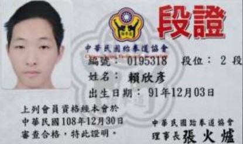
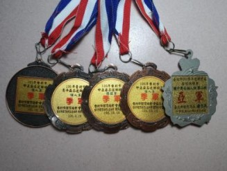

<!DOCTYPE html>
<html lang="zh-tw">
<head>
    <body background="background1.jpg"></body>
    <link href="style.css" rel="stylesheet" type="text/css">
    <meta name="description" content="期中報告">
    <meta name="author" content="14+3B017009+賴欣彥">
    <title>個人介紹-運動專長</title>
</head>
<body>
    
    <nav>
        <ul class="flex-nav">
            <li><a href="#">首頁</a></li>
            <li><a href="#">家庭背景</a></li>
            <li><a href="#">興趣</a></li>
            <li><a href="#"><font color="red">運動專長</font></a></li>
            <li><a href="#">個人成長</a></li>
        </ul>
    </nav>
    <div class="wrap">
        <div class="content">
            &emsp;
            
        </div>
    </div>
    <div class="box">    
    
    <p><h1>運動專長</h1>
    <h2>
        小學三年級時，聽從爸爸的話加入了柔道隊，國中時又去參加了跆拳道的練習，一開始我並沒有多大的興趣，不過隨著時間我慢慢地喜歡上它，在這些練習與比賽之中我學習到了很多，了解到比賽不是只有輸和贏，而其中的重點是在這之中你學了多少東西，能不能應用上去，把最好的一面展現出來。
        
    </h2>
    </p>
    
</body>
</html>